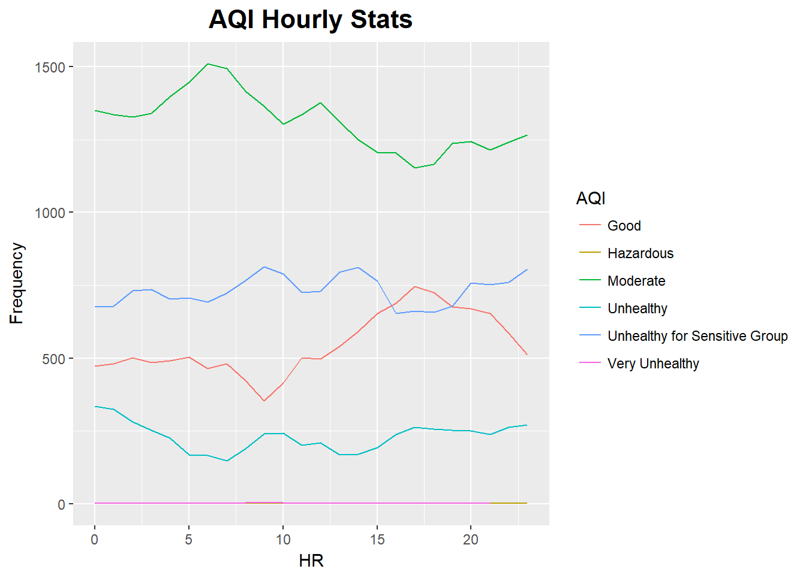

資料分析
資料匯入
Sys.setlocale(category='LC_ALL', locale='C')
site_all = read.csv(file.path("datasets", "site_all.csv"), encoding = "UTF-8", stringsAsFactors=FALSE)
site_hour = read.csv(file.path("datasets", "site_hour.csv"), encoding = "UTF-8", stringsAsFactors=FALSE)
site_hour$AQI[site_hour$AQI == "??"] <- "Very Unhealthy"
site_hour$date.v2 = as.Date(site_hour$date.v2)套件執行
library(ggplot2)
library(ggmap)
library(mapproj)
library(animation)
library(gganimate)
library(ggthemes)
library(dplyr)
library(plotly)整體分析
透過統計臺中火力發電廠周遭空氣品質監測站之PM2.5逐時濃度資料，瞭解各測站是否有在特定時間點空氣品質不佳之情形，若發現各測站於特定時間點皆有空氣品質不佳之情形，後續則可用以推測其不佳因素是否與火力發電廠排放之汙染氣體相關。
all.animate <- ggmap(get_googlemap(center=c(120.545644, 24.220108),
zoom=11,maptype='terrain'))+
geom_point(data = site_all,
aes(x = x, y = y,
frame = date.v2,
cumulative = TRUE),
size = 4,
colour= site_all$color,
show.legend = F) +
scale_colour_manual(name = "AQI",
labels = c("Good","Moderate","Unhealthy for Sensitive Groups","Unhealthy","Very
Unhealthy","Hazardous"),
values = c("#7401df", "#fce700", "#fc9f00",
"#FF0000","#7401DF","#8A0808")) +
scale_shape_manual(name = "AQI",
labels = c("Good","Moderate","Unhealthy for Sensitive Groups","Unhealthy","Very
unhealthy","Hazardous"),
values = c(19, 19, 19, 19, 19, 19))+
theme(legend.position = "right")+
scale_x_continuous(limits = c(120.35, 120.75), expand = c(0, 0)) +
scale_y_continuous(limits = c(24.1, 24.35), expand = c(0, 0))+
ggtitle("台中地區 PM2.5 AQI 逐日變化圖")+
theme(plot.title = element_text(size = 16, face = "bold", hjust = 0.3))+
ylab("Latitude") +
xlab("Longitude")
all.animate
gganimate(all.animate)
圖示呈現
首先彙整本次報告採用之測站每日PM2.5逐時濃度。於整體部分，空氣品質普通次數最多，對敏感族群不健康次之，而在紫爆(不健康)、危害等狀況次數極少，且於圖中並未顯示出有單一時刻空氣品質不佳之情形
b_all <- site_hour %>%
group_by(hours, AQI) %>%
mutate(n=1)%>%
summarise(sum = sum(n)) %>%
mutate(h = as.numeric(hours))
ggplot(data = b_all,
aes(x = b_all$hours, y = b_all$sum,
group = b_all$AQI,
colour = b_all$AQI)) +
geom_line()+
scale_color_manual(values=c("#8A0808","#56ed00","#eded02","#7401DF","#fc9f00", "#FF0000"))+
scale_color_discrete(name="AQI")+
theme(legend.key = element_rect(fill = "white"))+
ggtitle("AQI Hourly Stats")+
theme(plot.title =
element_text(size = 16, face = "bold", hjust = 0.5))+
ylab("Frequency") +
xlab("HR")## Scale for 'colour' is already present. Adding another scale for
## 'colour', which will replace the existing scale.
表格呈現
再以表格分析各測站之空氣品質情形，表格如下所示，可見各監測站點所呈現之空氣品質並未有單ㄧ站點數值特別高的情況。
- 良好 (Good)
#install.packages("readxl")
library(readxl)
hour_pm25_g <- read_xlsx("datasets/hour_pm25_final_v2.xlsx", sheet = 'g')
hour_pm25_g## # A tibble: 36 x 25
## X__1 `0<U+6642>` `1<U+6642>` `2<U+6642>` `3<U+6642>` `4<U+6642>` `5<U+6642>` `6<U+6642>` `7<U+6642>`
## <chr> <dbl> <dbl> <dbl> <dbl> <dbl> <dbl> <dbl> <dbl>
## 1 airsong 12 8 13 14 14 16 14 13
## 2 SilverStar02 14 13 11 10 12 13 13 11
## 3 SliverStar03 16 10 8 14 11 10 13 10
## 4 taichung 34 19 24 23 19 24 21 17 17
## 5 taichung104 18 18 20 18 16 16 21 16
## 6 taichung111 17 16 19 18 15 17 16 17
## 7 taichung135-_<U+8857> 5 8 7 9 9 11 10 9
## 8 taichung14 16 16 19 15 19 23 21 23
## 9 taichung34 19 24 23 19 24 21 17 17
## 10 taichung70 21 24 20 18 17 20 20 24
## # ... with 26 more rows, and 16 more variables: `8<U+6642>` <dbl>, `9<U+6642>` <dbl>,
## # `10<U+6642>` <dbl>, `11<U+6642>` <dbl>, `12<U+6642>` <dbl>, `13<U+6642>` <dbl>, `14<U+6642>` <dbl>,
## # `15<U+6642>` <dbl>, `16<U+6642>` <dbl>, `17<U+6642>` <dbl>, `18<U+6642>` <dbl>, `19<U+6642>` <dbl>,
## # `20<U+6642>` <dbl>, `21<U+6642>` <dbl>, `22<U+6642>` <dbl>, `23<U+6642>` <dbl>- 普通 (Moderate)
hour_pm25_y <- read_xlsx("datasets/hour_pm25_final_v2.xlsx", sheet = 'y')
hour_pm25_y## # A tibble: 36 x 25
## X__1 `0<U+6642>` `1<U+6642>` `2<U+6642>` `3<U+6642>` `4<U+6642>` `5<U+6642>` `6<U+6642>` `7<U+6642>`
## <chr> <dbl> <dbl> <dbl> <dbl> <dbl> <dbl> <dbl> <dbl>
## 1 airsong 37 42 35 34 37 39 38 42
## 2 SilverStar02 41 40 37 36 41 41 45 47
## 3 SliverStar03 42 41 45 40 44 49 47 46
## 4 taichung 34 40 36 41 40 43 41 41 42
## 5 taichung104 42 38 38 39 41 42 37 45
## 6 taichung111 40 37 35 37 37 39 45 43
## 7 taichung135-_<U+8857> 37 32 39 39 44 41 43 44
## 8 taichung14 35 38 42 44 46 41 47 50
## 9 taichung34 40 36 41 40 43 41 41 42
## 10 taichung70 42 39 43 46 43 38 43 42
## # ... with 26 more rows, and 16 more variables: `8<U+6642>` <dbl>, `9<U+6642>` <dbl>,
## # `10<U+6642>` <dbl>, `11<U+6642>` <dbl>, `12<U+6642>` <dbl>, `13<U+6642>` <dbl>, `14<U+6642>` <dbl>,
## # `15<U+6642>` <dbl>, `16<U+6642>` <dbl>, `17<U+6642>` <dbl>, `18<U+6642>` <dbl>, `19<U+6642>` <dbl>,
## # `20<U+6642>` <dbl>, `21<U+6642>` <dbl>, `22<U+6642>` <dbl>, `23<U+6642>` <dbl>- 對敏感族群不健康 (Unhealthy for Sensitive Groups)
hour_pm25_o <- read_xlsx("datasets/hour_pm25_final_v2.xlsx", sheet = 'o')
hour_pm25_o## # A tibble: 36 x 25
## X__1 `0<U+6642>` `1<U+6642>` `2<U+6642>` `3<U+6642>` `4<U+6642>` `5<U+6642>` `6<U+6642>` `7<U+6642>`
## <chr> <dbl> <dbl> <dbl> <dbl> <dbl> <dbl> <dbl> <dbl>
## 1 airsong 20 18 22 18 20 14 16 15
## 2 SilverStar02 26 25 30 28 27 24 25 28
## 3 SliverStar03 18 20 20 21 20 21 13 19
## 4 taichung 34 13 18 14 19 17 21 22 20
## 5 taichung104 18 22 20 16 18 17 20 17
## 6 taichung111 14 15 20 16 19 20 15 12
## 7 taichung135-_<U+8857> 31 29 27 27 25 30 28 26
## 8 taichung14 20 19 19 20 13 14 13 13
## 9 taichung34 13 18 14 19 17 21 22 20
## 10 taichung70 19 18 19 20 17 21 19 13
## # ... with 26 more rows, and 16 more variables: `8<U+6642>` <dbl>, `9<U+6642>` <dbl>,
## # `10<U+6642>` <dbl>, `11<U+6642>` <dbl>, `12<U+6642>` <dbl>, `13<U+6642>` <dbl>, `14<U+6642>` <dbl>,
## # `15<U+6642>` <dbl>, `16<U+6642>` <dbl>, `17<U+6642>` <dbl>, `18<U+6642>` <dbl>, `19<U+6642>` <dbl>,
## # `20<U+6642>` <dbl>, `21<U+6642>` <dbl>, `22<U+6642>` <dbl>, `23<U+6642>` <dbl>- 對所有族群不健康 (Unhealthy)
hour_pm25_r <- read_xlsx("datasets/hour_pm25_final_v2.xlsx", sheet = 'r')
hour_pm25_r## # A tibble: 36 x 25
## X__1 `0<U+6642>` `1<U+6642>` `2<U+6642>` `3<U+6642>` `4<U+6642>` `5<U+6642>` `6<U+6642>` `7<U+6642>`
## <chr> <dbl> <dbl> <dbl> <dbl> <dbl> <dbl> <dbl> <dbl>
## 1 airsong 7 9 6 5 6 3 5 3
## 2 SilverStar02 7 8 5 8 5 7 3 2
## 3 SliverStar03 7 9 8 8 7 4 2 2
## 4 taichung 34 11 7 7 6 4 5 5 6
## 5 taichung104 5 6 4 6 5 4 3 2
## 6 taichung111 7 7 5 3 4 1 3 3
## 7 taichung135-_<U+8857> 15 15 13 8 7 7 5 8
## 8 taichung14 8 8 7 7 7 4 3 2
## 9 taichung34 11 7 7 6 4 5 5 6
## 10 taichung70 6 6 3 6 5 5 4 3
## # ... with 26 more rows, and 16 more variables: `8<U+6642>` <dbl>, `9<U+6642>` <dbl>,
## # `10<U+6642>` <dbl>, `11<U+6642>` <dbl>, `12<U+6642>` <dbl>, `13<U+6642>` <dbl>, `14<U+6642>` <dbl>,
## # `15<U+6642>` <dbl>, `16<U+6642>` <dbl>, `17<U+6642>` <dbl>, `18<U+6642>` <dbl>, `19<U+6642>` <dbl>,
## # `20<U+6642>` <dbl>, `21<U+6642>` <dbl>, `22<U+6642>` <dbl>, `23<U+6642>` <dbl>- 紫爆 (Very Unhealthy)
hour_pm25_p <- read_xlsx("datasets/hour_pm25_final_v2.xlsx", sheet = 'p')
hour_pm25_p## # A tibble: 36 x 25
## X__1 `0<U+6642>` `1<U+6642>` `2<U+6642>` `3<U+6642>` `4<U+6642>` `5<U+6642>` `6<U+6642>` `7<U+6642>`
## <chr> <dbl> <dbl> <dbl> <dbl> <dbl> <dbl> <dbl> <dbl>
## 1 airsong NA 1 NA NA NA NA NA NA
## 2 SilverStar02 NA NA NA NA 1 NA NA NA
## 3 SliverStar03 NA NA NA NA NA NA NA NA
## 4 taichung 34 NA NA NA NA NA NA NA NA
## 5 taichung104 NA NA NA NA NA NA NA NA
## 6 taichung111 NA NA NA NA NA NA NA NA
## 7 taichung135-_<U+8857> NA NA NA NA NA NA NA NA
## 8 taichung14 NA NA NA NA NA NA NA NA
## 9 taichung34 NA NA NA NA NA NA NA NA
## 10 taichung70 NA NA NA NA NA NA NA NA
## # ... with 26 more rows, and 16 more variables: `8<U+6642>` <dbl>, `9<U+6642>` <dbl>,
## # `10<U+6642>` <dbl>, `11<U+6642>` <dbl>, `12<U+6642>` <dbl>, `13<U+6642>` <dbl>, `14<U+6642>` <dbl>,
## # `15<U+6642>` <dbl>, `16<U+6642>` <dbl>, `17<U+6642>` <dbl>, `18<U+6642>` <dbl>, `19<U+6642>` <dbl>,
## # `20<U+6642>` <dbl>, `21<U+6642>` <dbl>, `22<U+6642>` <dbl>, `23<U+6642>` <dbl>- 危害 (Hazardous)
hour_pm25_b <- read_xlsx("datasets/hour_pm25_final_v2.xlsx", sheet = 'b')
hour_pm25_b## # A tibble: 36 x 25
## X__1 `0<U+6642>` `1<U+6642>` `2<U+6642>` `3<U+6642>` `4<U+6642>` `5<U+6642>` `6<U+6642>` `7<U+6642>`
## <chr> <dbl> <dbl> <dbl> <dbl> <dbl> <dbl> <dbl> <dbl>
## 1 airsong NA NA NA NA NA NA NA NA
## 2 SilverStar02 NA NA NA NA NA NA NA NA
## 3 SliverStar03 NA NA NA NA NA NA NA NA
## 4 taichung 34 NA NA NA NA NA NA NA NA
## 5 taichung104 NA NA NA NA NA NA NA NA
## 6 taichung111 NA NA NA NA NA NA NA NA
## 7 taichung135-_<U+8857> NA NA NA NA NA NA NA NA
## 8 taichung14 NA NA NA NA NA NA NA NA
## 9 taichung34 NA NA NA NA NA NA NA NA
## 10 taichung70 NA NA NA NA NA NA NA NA
## # ... with 26 more rows, and 16 more variables: `8<U+6642>` <dbl>, `9<U+6642>` <dbl>,
## # `10<U+6642>` <dbl>, `11<U+6642>` <dbl>, `12<U+6642>` <dbl>, `13<U+6642>` <dbl>, `14<U+6642>` <dbl>,
## # `15<U+6642>` <dbl>, `16<U+6642>` <dbl>, `17<U+6642>` <dbl>, `18<U+6642>` <dbl>, `19<U+6642>` <dbl>,
## # `20<U+6642>` <dbl>, `21<U+6642>` <dbl>, `22<U+6642>` <dbl>, `23<U+6642>` <dbl>重點分析
取空氣品質不佳的天數，分析各測站的空氣品質情形(空氣品質不佳天數的選擇標準為只要有一個測站空氣品質不佳就會進行分析)。
10月份
10-12月中，共計38天平均空氣品質呈現不佳(AQI)的情況，即為PM2.5 (μg/m3)24小時平均值達到54.5以上，對所有族群皆不健康
其中10月共計11天，分別為：
2017/10/1、2017/10/2、2017/10/3、2017/10/9、2017/10/10、2017/10/11、2017/10/15、2017/10/19、2017/10/22、2017/10/23、2017/10/30等日，而分析各測站於上述日期之空氣品質，可見在各時點中，並空氣品質變差之時段並不一致，可能為清晨、傍晚或白天。
x <- list(
zeroline = FALSE,
showline = TRUE,
title = "小時")
pal <- c("#56ed00","#eded02","#fc9f00", "#FF0000","#7401DF","#8A0808")
pal <- setNames(pal, c("Good","Moderate","Unhealthy for Sensitive Groups","Unhealthy","Very unhealthy","Hazardous"))11月份
在11月的部分，空氣品質不佳的天數共計12天，分別為：
2017/11/4、2017/11/7、2017/11/8、2017/11/10、2017/11/11、2017/11/13、2017/11/17、2017/11/18、2017/11/22、2017/11/24、2017/11/28、2017/11/29等日，分析各日期的逐時空氣品質，亦可見在空氣品質不佳的時間點不一致，在各時間點皆有空氣品質不佳的狀況。
12月份
12月中空氣品質不佳的天數共計15天，分別為：
2017/12/1、2017/12/4、2017/12/8、2017/12/11、2017/12/20、2017/12/22、2017/12/23、2017/12/24、2017/12/25、2017/12/26、2017/12/27、2017/12/28、2017/12/29、2017/12/30、2017/12/31等日，於逐時圖中呈現與10、11月相同狀況，空氣品質不佳之時間點散布於各時間點，於各日期中，並未有單一時間點空氣品質同時變差之情況。
小結
透過分析臺中火力發電廠周遭空氣品質監測站之 PM2.5 逐時濃度資料，可得知各測站並未在特定時間點有空氣品質不佳之情形，與先前假設火力發電廠排放之汙染氣體可能於特定時段影響周遭之空氣品質的假設不一致。